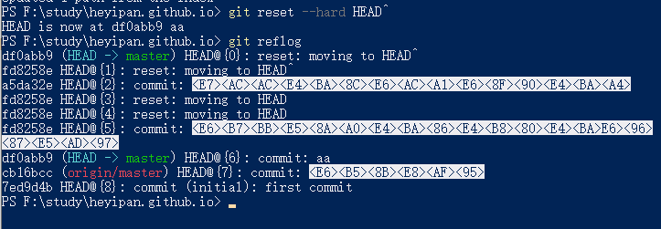

项目开发中git是非常重要的，它可以有效、高速地处理从很小到非常大的项目版本管理。
资料：
- 廖雪峰git教程： https://www.liaoxuefeng.com/wiki/896043488029600
- git 笔记： https://github.com/Zhangguoliu/learn-git/blob/master/learngit-note.md
- git 教程： https://git-scm.com/book/zh/v2/Git-基础-总结
- git 命令的理解： https://www.yiibai.com/git/git_fetch.html
- git 在线学习： https://learngitbranching.js.org/?demo
- 了解git flow 协作开发理念 : https://www.cnblogs.com/cnblogsfans/p/5075073.html
项目开发常用命令
可以设置当前厂库的 用户和邮箱
1 | git config --local user.name 'xxx'; |
设置全局的仓库大的用户名和邮箱
1 | git config --global user.name 'xxx'; |
在github提交代码后如果贡献如果没有被记录，有可能就是你全局或者当前的git仓库的用户名和邮箱不是github的用户名和邮箱。
如果这个命名存在也可以直接覆盖修改,还可以替换git config中已有的邮箱
1 | $ git config --global --replace-all user.email "输入你的邮箱" |
保存密码： 如果没有设置ssh 可以通过保存密码的方式来跳过输入密码这个步骤
1 | git config credential.helper store |
git stash: https://www.cnblogs.com/zndxall/archive/2018/09/04/9586088.html
本地主分支 :
origin/HEAD -> origin/master表示默认分支查看提交详细信息:
git showgit status：命令用于显示工作目录和暂存区的状态。使用此命令能看到那些修改被暂存到了, 哪些没有, 哪些文件没有被Git tracked到。git status不显示已经commit到项目历史中去的信息。 一般红色的没有被追踪到，绿色的是已经add后的， 意思就是被追踪了克隆指定分支下的内容:
clone -b brandName url参看所有分支：
git branch -a 会列出当前库所有的分支（本地、远程）切换分支：
git checkout branchName加上 -b 参数会新建并切换到该分支git checkout -b branchName创建分支：
git brahch branchName删除分支：
git branch --delete branchName删除远程分支：
git push --delete origin branchName删除那些远程仓库不存在的分支:
git remote prune origin查看本地分支与远程分支的对应关系：
git remote show origin
通过这个命令可以看出 本地分支与远程分支的对应关系，是否与远程有对应关系。
Local branches configured for 'git pull':表示本地分支 从哪个远程分支拉取
Local branches configured for 'git pull':表示本地分支 推送到哪个远程分支上去
git 常用命令理解
git fetch
将某个远程主机的更新 git fetch <远程主机名> 若要更新所有分支，命令可以简写为： git fetch
上面命令将某个远程主机的更新，全部取回本地。默认情况下，git fetch取回所有分支的更新。如果只想取回特定分支的更新，可以指定分支名,如下所示: git fetch <远程主机名> <分支名>
比如，取回origin主机的master分支： git fetch origin master
所取回的更新，在本地主机上要用远程主机名/分支名的形式读取。比如origin主机的master分支，就可以用origin/master读取。
git branch命令的-r选项，可以用来查看远程分支，-a选项查看所有分支。
1 | $ git branch -r |
上面命令表示，本地主机的当前分支是master，远程分支是origin/master。取回远程主机的更新以后，可以在它的基础上，使用git checkout命令创建一个新的分支。
常见分支操作 -新建分支
情况1 ：
如果远程新建了一个分支，本地没有该分支，可以用 git checkout --track origin/branch_name
这时候本地会新建一个分支名叫branch_name，会自动跟踪（track）远程的同名分支branch_name（就可以在这个本地分支上推拉代码）
用上面中方法，得到的分支名永远和远程的分支名一样，如果想新建一个本地分支不同名字，同时跟踪一个远程分支可以利用。git checkout -b new_branch_name branch_name
这条指令本来是根据一个branch_name分支分出一个本地分支new_branch_name，但是如果所根据的分支branch_name是一个远程分支名，那么本地的分支会自动的track远程分支。
注意：一般用
git push --set-upstream origin branch_name来在远程创建一个与本地branch_name同名的分支并跟踪；利用git checkout --track origin/branch_name来在本地创建一个与branch_name同名分支跟踪远程分支.
当使用git checkout -b new_branch_name origin/branch_name当提交的时候会报这个错：
1 | fatal: The upstream branch of your current branch does not match |
这是由于Git中push.default的设置的原因
Git中push.default可以指定在没有明确指定远程分支的情况下，默认push的远程分支，其取值可以是：
nothing-push操作无效，除非显式指定远程分支（意思就是 push的时候 必须指定远程的分支）current-push当前分支到远程同名分支，如果远程同名分支不存在则自动创建同名分支（central 和 non-central workflows都适用）upstream-push当前分支到它的upstream分支上（通常用于central workflow）simple-simple和upstream是相似的（通常用于central workflow），只有一点不同，simple必须保证本地分支和它的远程upstream分支同名，否则会拒绝push操作matching-push所有本地和远程两端都存在的同名分支central / non-central workflows是Git的两种常见工作流场景：central workflows- 集中式工作流，一个分支的push和pull都是同一个远程仓库non-central workflows- 非集中式工作流，一个分支的push和pull可能分别都有不同的远程仓库
在Git 2.0之前，push.default的内建值被设为’matching’，2.0之后则被更改为了’simple’。
通过git remote show origin可以看到每个分支的具体信息: (例如 git checkout -b local origin/daily/dev)
1 | Local branches configured for 'git pull': |
由于git checkout -b local origin/daily/dev会自动创建远程分支/daily/dev 和本地分支local的跟踪关系。
其中Local branches configured for 'git pull':下的就是upstream跟踪分支。
可以看出，远程分支/daily/dev和本地分支local建立了git pull的关系，但是没有建立git push的关系。此时如果强行push，不会成功，会出现如下提示：
1 | fatal: The current branch new has no upstream branch. |
这种提示的处理方式下面会给出具体的处理方法。
情况2 ：
本地新建分支，然后推送到远程，可以使用git branch branch_name或者git checkout -b branch_name(新建并切换到该分支) 新建一个本地分支,然后修改了代码 执行add 、commit、最后执行push操作 发现会发现报错：
1 | # git push |
这是因为Git不知道你要提交到哪个分支上去, 所以需要你指定提交的分支, 直接从本地检出的新分支，第一次push，远程仓库还没有与之建立tracing关系的分支，所以需要设置upstream，这个设置一次之后，后面再push的时候就不用设置了。
如果不想这样写则需要指定提交到远程的分支： git push origin branch_name。
git push origin branch_name推向制定的分支，最强暴的方法。但是每次提交都要指定，太麻烦了（而且还容易出错）。所以需要与远程分支关联。
所以使用git push --set-upstream origin branch_name远程分支关联。 这样就不用每次push的时候都指定分支了，都会提交到关联的远程分支上去。(branch_name是远程分支名)
常见分支操作 合并分支
git merge命令用于将两个或两个以上的开发历史加入(合并)一起。 将 merge 后面的分支合并到当前分支。
将分支dev合并到当前分支中，自动进行新的提交：
1
git merge dev
合并分支 branch1 和 branch2 在当前分支的顶部，使它们合并：
1
git merge branch1 branch2
合并branch1分支到当前分支，使用ours合并策略：
1
git merge -s ours branch1
将分支branch1合并到当前分支中，但不要自动进行新的提交：
1
git merge --no-commit branch1
Git checkout [文件名]、git reset HEAD [文件名] 、git reset [哈希值] 的应用场景。
git reset HEAD [文件名]
通过git reset [文件名] 可以将暂存区的文件放出来 ， 但是我们的工作区的内容没有改变。只是相当于 对[文件名] 不执行 git add 操作 。 类似于后退操作。
git checkout [文件名]
工作区回退：如果比对后，发现这次改动不是我们想要的，那么我们可以回退到未修改之前，（在vsCode等编辑器里面，可以放弃修改）
1 | git checkout readme.txt |
下面这串数字是我们新加的, 通过git status 我们可以看到readme.md文件做了修改
使用 git checkout [文件名] 可以将它变成修改前的是 ，意思就是放弃本次修改。 执行改命令后，发现添加的数字不见了
git status 显示文件没有修改。

如果我们已经添加到了暂存区（意思已经执行 git add 操作了），如果要退回到修改前，我们应该怎么处理呢。
直接通过git checkout [文件名]是不能将它回退到未修改的样子的。可以先采用git reset HEAD [文件名] 将它移除暂存区（意思就是回退在没有执行git add 的时候）, 然后通过git checkout [文件名] 将改文件退回到修改前。
git reset [哈希值]
上面的操作都是在暂存区 ，还没有使用git commit 提交到本地厂库 。如果已经提交到本地厂库了又要如何操作呢。
将readme.md文件添加一段文字, 然后提交到本地的厂库。

通过git reflog可以看到一共有两个版本 当前的版本是HEAD -> master

然后 在修改文件readme.md，然后在提交到本地厂库。

但是这个时候的需求是 回到没有添加第二次提交文字的时候，意思就是要回到上一个版本。
可以通过使用 git reset 的命令来完成。基本的流程是执行：git reset --mixed HEAD^意思就是回退到上一个版本。
可以发现命令成功了，是不是页面也变成了原来的样子呢，然后并没有改变。那这个命令具体做了什么呢?
我们通过看readme.md和git status看可以看到


是将它回退没有执行git add命令之前了，相当于你修改了代码 但是没有提交的那个状态。然后可以通过git checkout readme.md 命令将它变回未修改的状态。
但是如果我们要从现在没有添加那个文字的这个版本 变到添加了文字的版本 要如何操作呢。
通过git reflog 可以看出当前的版本是fd8258e

我们使用 git reset --hard HEAD^, 发现这里readme.md文件直接被修改了。

同时版本并灭有从fd8258e 变到 a5da32e 而是变到了df0abb9，这里的原因是git的提交是一条时间线，在这条时间线上，fd82582的上一次提交就是df0abb9

如果要变成指定的版本应该采用命令： git reset [哈希值]； --mixed 为默认参数。

显示readme.md被修改了，通过左右两边的比较可以发现。 左边相当于原文件，而右边相当于对原文件的修改。可以通过 git checkout readme.md放弃本次修改。

执行git checkout readme.md页面变成了修改之前的，同时也可以使用git statsu看出没有做出修改。